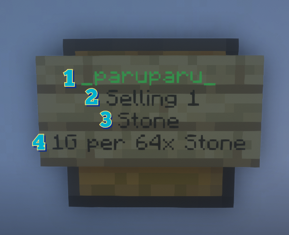
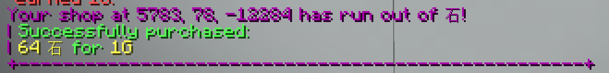
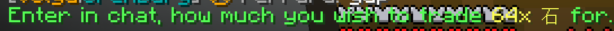
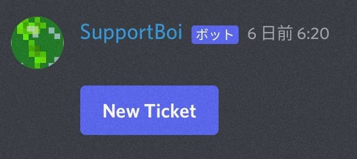
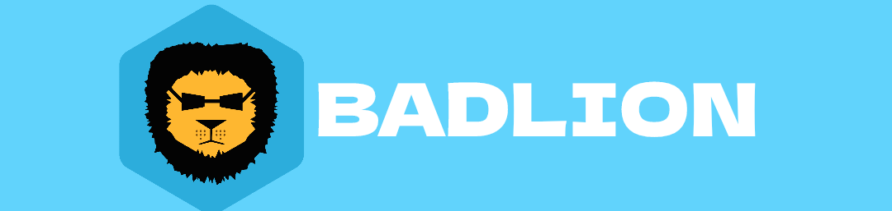
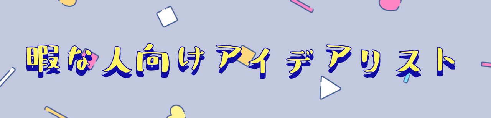
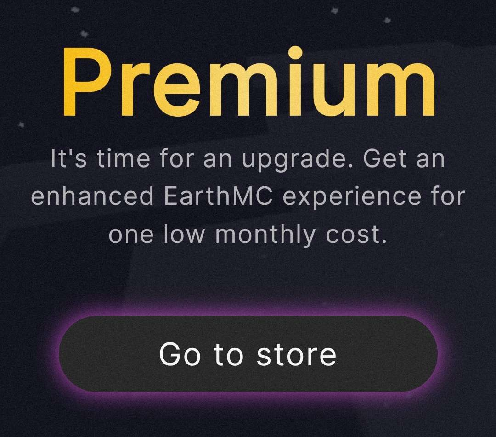
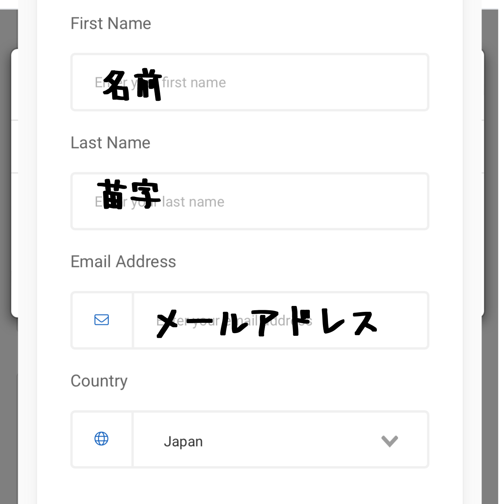
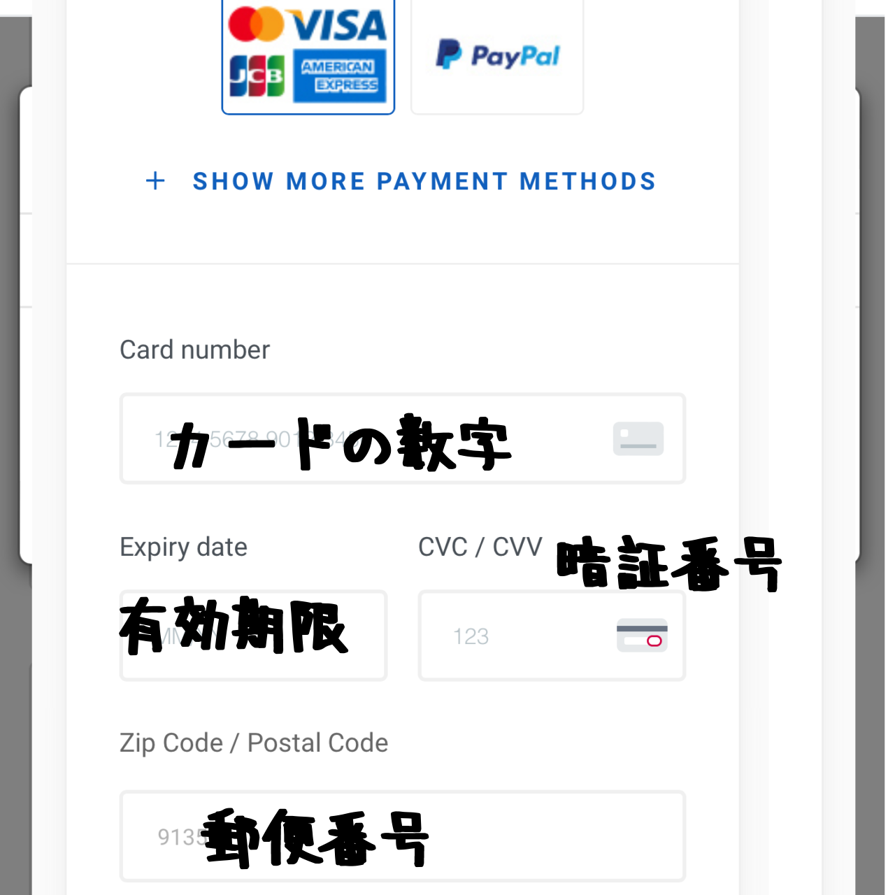
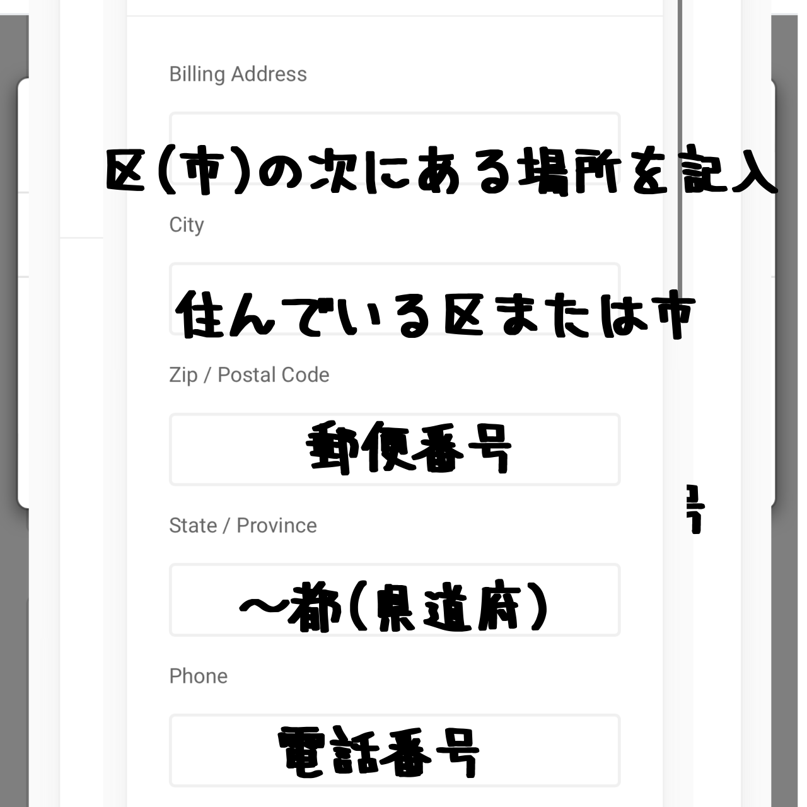

EMCへようこそ！

このサイトは、MinecraftのEarthMCサーバーで生活するための日本語チュートリアルです。
EMCでは、通貨として「金（Gold）」を使用し、「G」と表記します。
まずは「最初にすべきこと」から読み進めてください。
🔰 最初にすべきこと
① Vote（投票）をする
チャットで /vote と入力します。

表示されたURLをクリックして、投票サイトにアクセスします。

サイトで「私はロボットではありません」にチェックを入れ、自分のプレイヤー名を入力して投票します。1日2回までルーレット（クレート）が貰えます。
② 土地をもらう
町（国）に入ったら、市長に声をかけて自分の土地をもらいましょう。最初は自分の土地以外は触れません。
③ お家を作る

Voteなどで金がある程度集まったら、自分の拠点となる家を建てましょう。
④ 観光する

自分の町や、/n spawn [国名] コマンドで他の国を観光し、ショップや建築を見て回りましょう。
💰 お金（金）の集め方

① 掘る

最も基本的な金策です。領土外（荒野）で金を掘りますが、PK（プレイヤーキル）のリスクがあるため、透明ポーションの使用を推奨します。
⛏️ 金の掘り方（詳細）
必要な物:
- 効率V・耐久IIIのピッケルとシャベル
- 食料
- 透明ポーション（安全のため）
- 採掘IIポーション (Haste II potion)
掘り方:
- 領土外（荒野）に出ます。
- 透明ポーションを飲みます（PK対策）。
- 推奨高度（y12前後、またはy22）まで掘り進めます。
- 採掘ポーションを使い、効率よく掘ります（例: 横5マスx縦2マス）。

② 商売（ショップ経営）

自分でショップを開くか、MaliやYamatoなどの買取ショップにアイテムを売って稼ぎます。
③ PK（Player Kill）

他のプレイヤーを倒してアイテムを奪う方法です。PVPスキルが必要で、非常に危険度が高いです。
番外編


- レイド (廃墟漁り): 42日間誰もログインしなかった町は廃墟（保護が解除）となり、アイテムが取り放題になります。
- ギャンブル: カジノで稼ぐ方法ですが、破産のリスクがあります。
- 会社: 整地会社などに入って給料をもらう方法もあります。
🏪 ショップの使い方

看板の見方
- 売ってる人の名前（売り切れの場合は赤色になります）
- Selling (販売) か Buying (買取) か
- 売っている物
- 価格（例: 64個の石を1Gで販売）
✅ アイテムの買い方

- 買いたいショップの看板（またはチェスト）を左クリックします。
- チャット欄に情報（"Shop Information"）が表示されます。
- チャット欄に買いたい個数を数字で入力します（例:
1）。 - 「Successfully purchased」と表示されれば購入成功です。 

🔵 ショップの作り方

- 市長に相談し、自分の土地をSHOPチャンクに設定してもらいます。
- チェストを設置し、売りたいアイテムを持ってチェストを左クリックします。
- チャットに「Enter in chat, how much...」と表示されます。 
- チャット欄に販売価格を数字で入力します。
- チェストにアイテムを入れると販売が開始されます。
🚫 サーバーのルール
サーバーで快適にプレイするために、ルールを守りましょう。
- 不正行為: チートクライアント、マクロ、AFK自動キック回避は禁止です。
- アカウント: 代替アカウント（サブ垢）は許可されていません。
- チャット: スパム行為、いじめ、ヘイトスピーチ、個人情報の共有は禁止です。
- グローバルチャット:
/globalは英語のみです。日本語チャット/Japaneseを使いましょう。 - RMT: ゲーム内アイテムやサービスをリアルマネーで販売することは禁止です。
- 荒らし: 他人のクレーム（土地）内やその周辺を破壊することは禁止です。
- 地形: 自然地形の大きな改変（大規模なテラフォーミング）は禁止されています。
😼 危険と対策
EMCには多くの危険があります。自分の身は自分で守りましょう。
危険1: アイテムロスト
死ぬとアイテムをその場にドロップし、他人に拾われる可能性があります。
対策: 貴重品はエンダーチェストに保管しましょう。中身は自分しか見れません。
危険2: Wilderness（荒野）でのPK
誰も所有していない土地（荒野）はPVP（攻撃）が可能です。マップでプレイヤーの位置がわかるため、狙われやすいです。
対策:
- 荒野に出ない（移動は
/n spawnを使う）。 - 荒野に出る際は、貴重品を持たない。
- 透明ポーションを飲む（マップに映らなくなる）。
危険3: 安全地帯での詐欺・トラップ
「こっち来て」などとチャット（tell）で誘導され、荒野に連れて行かれたり、PVP可能エリアで殺されることがあります。
対策: 知らないプレイヤーや外国人からの甘い言葉には乗らず、ついていかないようにしましょう。
💻 よく使うコマンド
常に使うコマンド
/n spawn [国名] : 指定した国にテレポート
/n spawn : 自分の国にテレポート
/t spawn : 自分の街にテレポート
/tell [名前] [内容] : 個人メッセージを送る
/r [内容] : 最後に受信したtellに返信する
/vote : 投票用のリンクを表示する
チャット関連
/tc : 街チャット
/nc : 国チャット
/global : グローバルチャット（英語のみ）
/Japanese : 日本語チャット
便利なリンク
- 公式サイト:
https://earthmc.net/ - マップ:
https://earthmc.net/map/ - コマンド一覧:
https://earthmc.fandom.com/wiki/Commands
🤔 よくある質問（FAQ）
- Q: 英語がぜんぜんわからない！
- A: 翻訳機（例: DeepL）を使いましょう。
- Q: ●●（アイテム）はどこで売ってますか？ 相場はいくら？
- A: YamatoやMaliといった大きなショップで大抵の物は売っています。そこで値段も確認してみてください。
- Q: 殺されてアイテムをロストしました。
- A: 基本的に自己責任です。諦めて、「危険と対策」ページを読んで気をつけましょう。
- Q: VPって何ですか？ "bruh" ってチャットに出た！
- A: Vote Party の略です。サーバー全体のVoteが5000回に達すると、オンライン中の全プレイヤーにクレート（景品箱）が配られます。
/vpで残り回数を確認できます。 - Q: 町の中でスタックした！ 出られません！
- A:
/t spawnや/n spawnを試してください。それでもダメな場合、Discordでチケットを切り、スタッフに助けを求めましょう。


🖱️ おすすめクライアント
クライアントとは、便利なMOD（機能）の詰め合わせパックのようなものです。
1. BADLION client
おすすめ度: ⭐⭐⭐
特徴: Mod数が多く、UIが見やすい。暗視MOD（フルブライト）付き。
2. Lunar client
おすすめ度: ⭐⭐⭐⭐
特徴: 非常に軽く、FPSが上がりやすい。PCが重い人におすすめ。フルブライト付き。
3. feather client
おすすめ度: ⭐⭐⭐⭐⭐
特徴: 軽くてシンプル。外部Modも導入できるのが最大の特徴。
🥱 やり込み要素（暇な人向け）
EMCに慣れてやることがなくなったら、以下に挑戦してみましょう。
- ショップ経営
- 廃墟探索（レイド）
- 世界旅行（
/n spawnで同盟国を巡る） - mcmmoレベル上げ
- PVP（アリーナや荒野で戦う）
- 建築（マップアート制作など）
👑 上級者向けガイド
🤴 市長・国王向け
町の作り方: /t create [町の名前] で作成（64G必要）。
権限設定（重要）:
- 権限設定をミスすると、街のアイテムが盗まれます。
- 街を作ったら、まず
/t perm offで全権限をオフにしましょう。 - 権限は4カテゴリ (build, destroy, switch, item) と5区分 (friend, resident, nation, ally, outsider) で設定します。
💎 Premium（課金）について
月額（8.99ユーロ）で様々な特典が得られる課金システムです。
主な機能:
- 優先キュー（サーバーに早く入れる）
- パーティー作成（mcmmoレベル上げに便利）
- エンダーチェストの収納量が2倍になる
/nicknameが使えるようになる
買い方:
- 「EarthMC premium」と検索し、公式サイトに行きます。
- 「Go to store」をクリックします。 
- 期間を選び、MCIDを入力します。
- 名前、苗字、メールアドレス、国（Japan）を入力します。 
- 支払い方法（VISAカードまたはPayPal）を選択し、情報を入力します。  